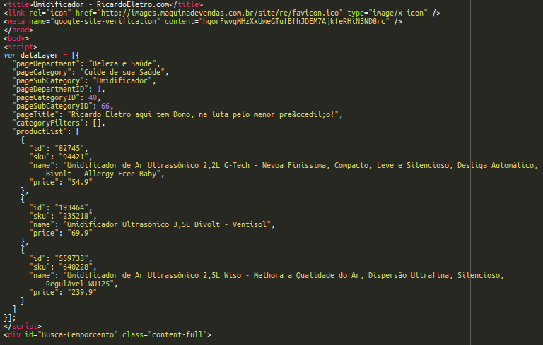
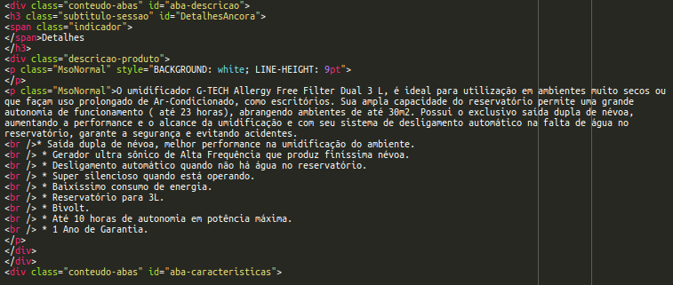
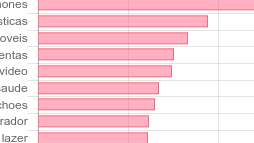

CE062 - Mineração de Texto - 2017
Daniel Tyszka Jr / github
| id | Visitante1 | Visitante2 |
|---|---|---|
| Categoria | Fogões | Fogões |
| Keywords | vidro temperado, desempenho gourmet, panelas mais estáveis e seguras | grades individuais, acendimento automático, forno esmaltado |
Tipo de Página e Categorias: variável "dataLayer"
Descrição do Produto: html
Padrões?
| [substantivo] | [substantivo][advérbio] | [substantivo][adjetivo] | [substantivo][preposição][substantivo] | |
|---|---|---|---|---|
| qualidadeprodutoembalagemcaixasproduto | elegância àutilização quandonoite bembambu ecologicamentefato bem | sistema ciclônicocabo elétricoaspirador smartreservatório práticocabo elétrico | programas de lavagemconsumo de energiafunção com acionamentochapa de açokit de acessórios |
Dados de visitas x Dados sobre Páginas
CE062 - Mineração de Texto - 2017
Daniel Tyszka Jr / github